Lab 07: Exchange Online and Internal Mail Flow
Configured Exchange Online for Nietz Ltd, including delegated administration, user and shared mailboxes, Full Access and Send As permissions, internal mail-flow testing and delivery confirmation through message trace.
Overview
This lab continued the Microsoft 365 work completed in Labs 05 and 06. The existing @nietz.co.uk cloud user accounts and licensing baseline were used to validate Exchange Online mailbox readiness, shared mailbox administration, internal delivery, Send As behaviour, and message trace troubleshooting.
The lab is deliberately scoped to Exchange Online administration and internal mail flow. It does not claim external inbound mail routing, public MX changes, SPF, DKIM, or DMARC validation. Those records and external tests are reserved for Lab 08: External Mail Flow and DNS Records.
Objective
The objective was to complete practical Exchange Online support tasks: assign the correct admin role, confirm mailbox provisioning, create shared mailboxes, configure mailbox delegation, validate internal delivery, test Send As from the support shared mailbox, and confirm delivery using Exchange Online message trace.
Environment
| Component | Value |
|---|---|
| Company | Nietz Ltd |
| On-premises AD Domain | corp.nietz.co.uk |
| Microsoft 365 / Tenant Domain | nietz.co.uk |
| Exchange Platform | Exchange Online |
| Setup Admin | admin@nietz.co.uk |
| Daily Admin | k.nietzold@nietz.co.uk |
| Support Shared Mailbox | support@nietz.co.uk |
| Support Alias | helpdesk@nietz.co.uk |
| Sales Shared Mailbox | sales@nietz.co.uk |
| Support Delegates | c.bennett@nietz.co.uk, d.smith@nietz.co.uk |
| Sales Delegates | k.jones@nietz.co.uk, s.jackson@nietz.co.uk |
| Mail Flow Test Sender | e.wilson@nietz.co.uk |
| Previous Lab Dependency | Lab 06: MFA, Password Reset and Licensing |
| Next Lab | Lab 08: External Mail Flow and DNS Records |
Configuration and Evidence
1. Exchange Administrator Role Assignment
I assigned the Exchange Administrator role to the daily admin account so Exchange Online mailbox administration could be performed without relying on the setup/global admin account for routine support work.
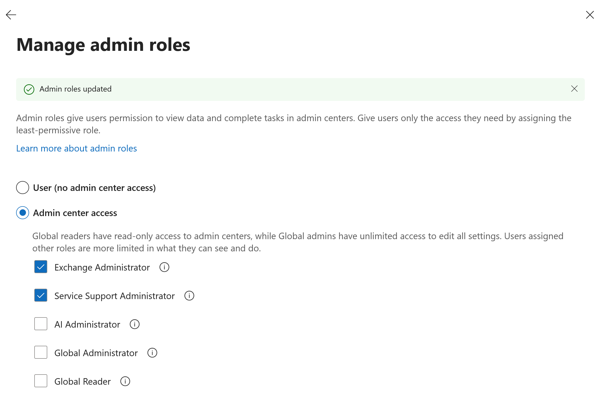
2. Exchange Admin Center Access
I opened the Exchange admin center and confirmed that the Nietz Ltd tenant showed Exchange Online administration areas including recipients, mail flow, roles, migration, organisation settings and troubleshooting.
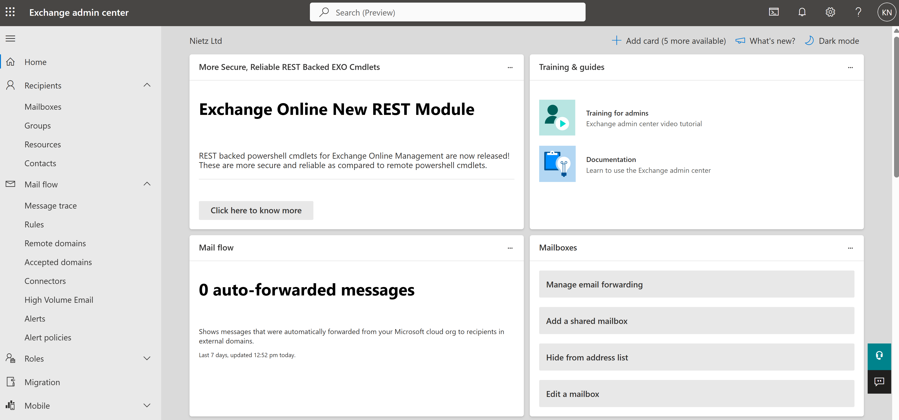
3. User Mailbox Validation
I confirmed that licensed Nietz Ltd users had Exchange Online user mailboxes provisioned with @nietz.co.uk addresses.
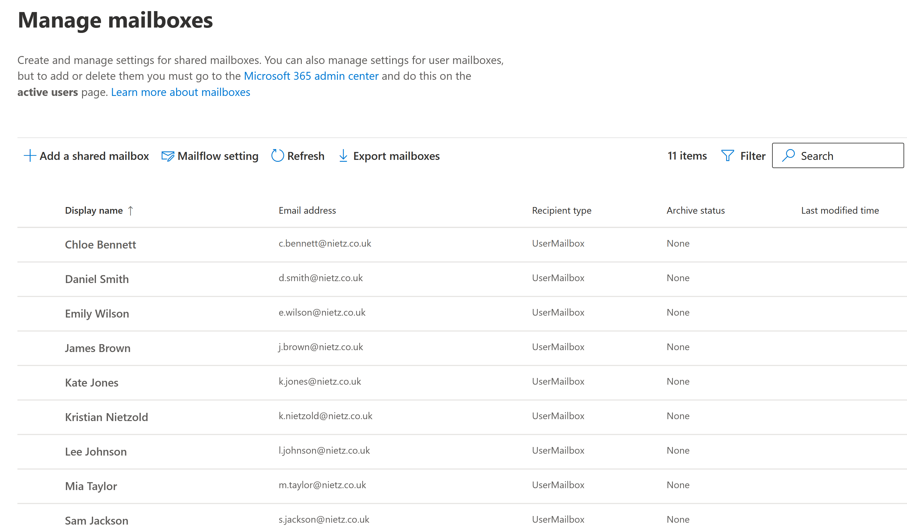
@nietz.co.uk accounts.4. Shared Mailboxes Created
I created the support@nietz.co.uk and sales@nietz.co.uk shared mailboxes. The Support mailbox also uses the helpdesk alias for a realistic service desk address.
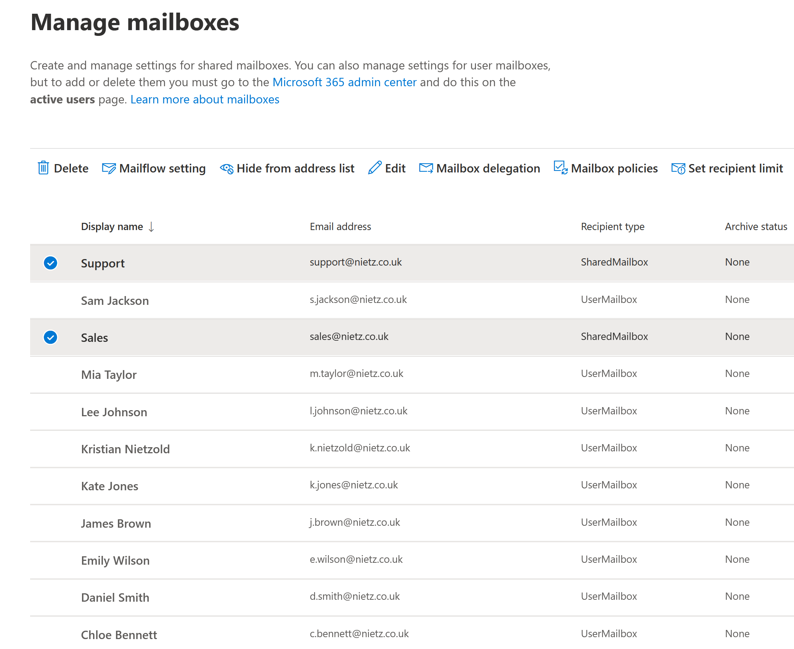
helpdesk alias.5. Support Mailbox Permissions
I configured the Support shared mailbox with Send As and Read and manage / Full Access permissions for Chloe Bennett and Daniel Smith.
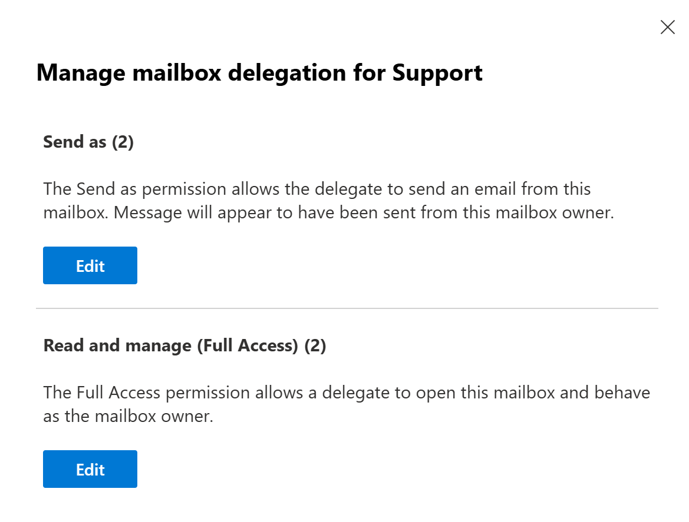
6. Sales Mailbox Permissions
I configured the Sales shared mailbox with Send As and Read and manage / Full Access permissions for Kate Jones and Sam Jackson.
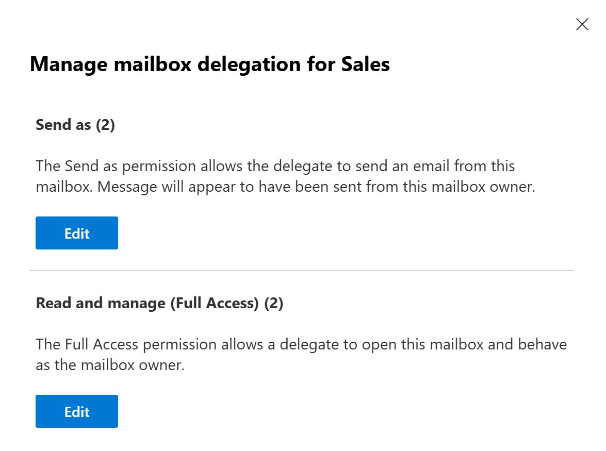
7. Internal Mail Flow Test to Support
I sent an internal test message from Emily Wilson to the Support shared mailbox and confirmed that the message arrived in the Support mailbox inbox.
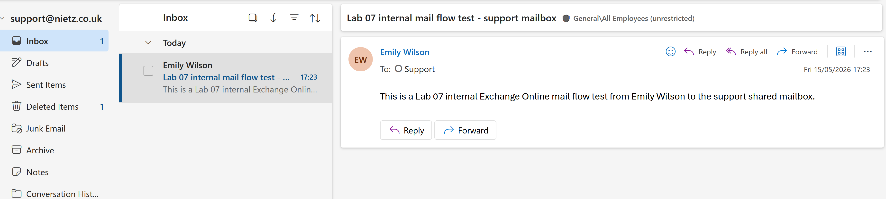
8. Internal Message Trace Validation
I used Exchange Online message trace to confirm that the Lab 07 internal test message was received, processed and delivered to the Support shared mailbox.
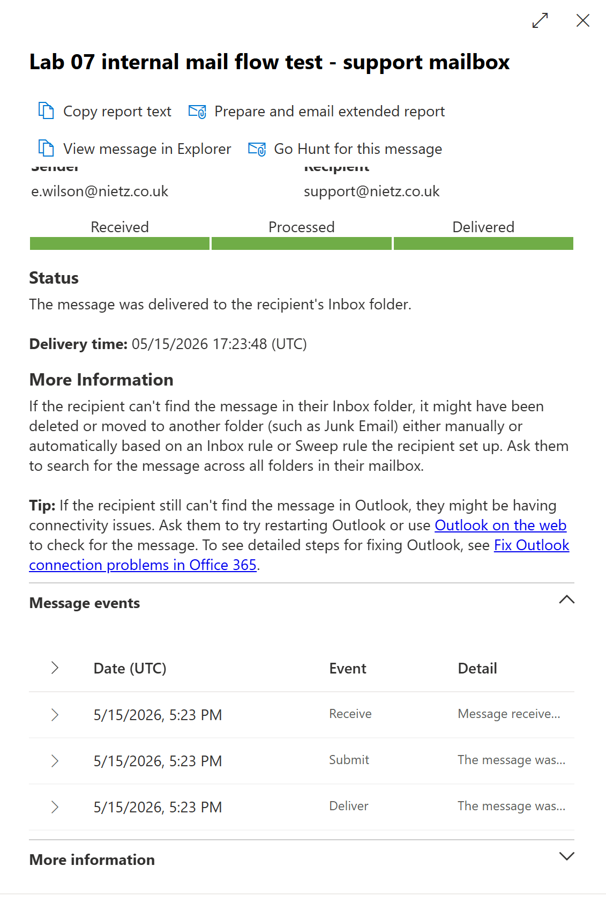
9. Send As Support Test
I sent a message from the Support shared mailbox to Emily Wilson to validate that Send As worked from the user mailbox experience, not only from the admin permission screen.
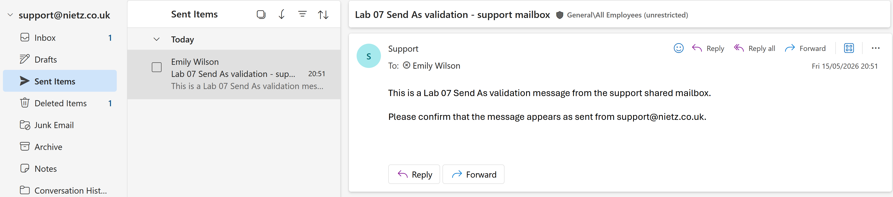
10. Send As Message Received
I confirmed that Emily Wilson received the test message and that the message appeared as coming from the Support shared mailbox.
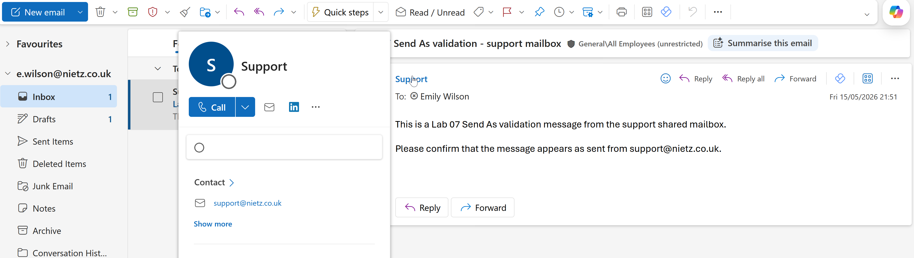
11. Send As Message Trace Validation
I used Exchange Online message trace to confirm that the Send As validation message from support@nietz.co.uk to e.wilson@nietz.co.uk was delivered.
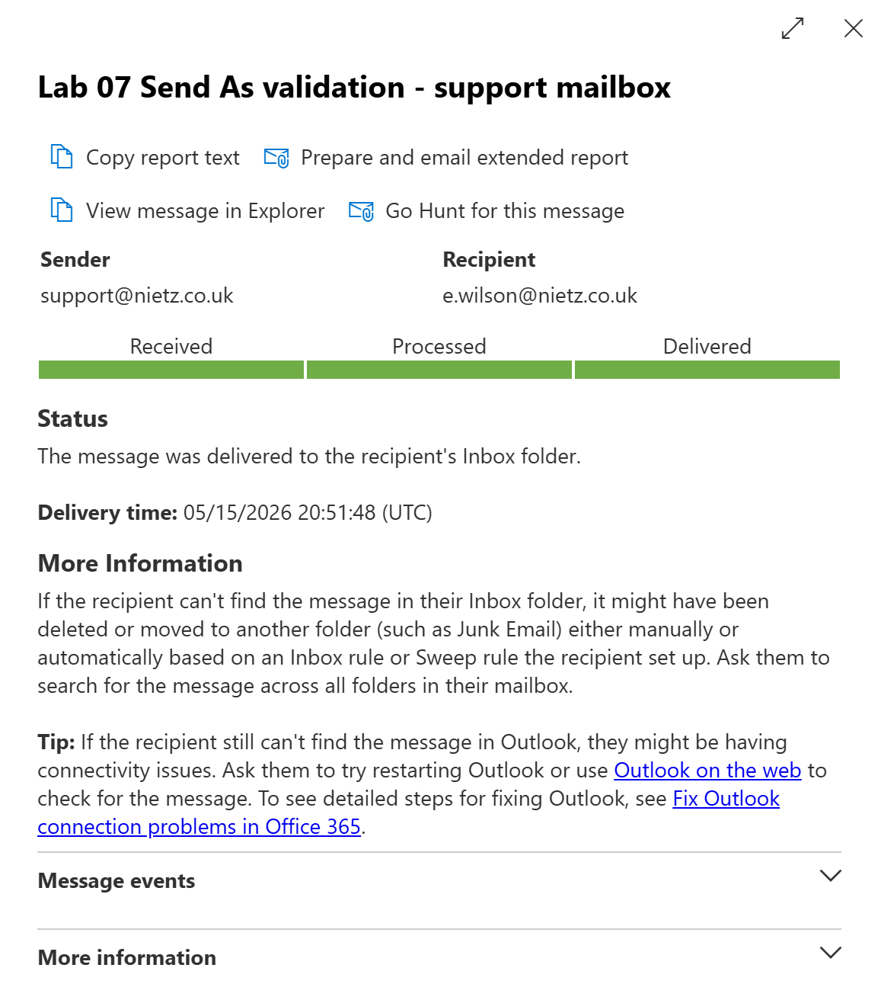
Validation
The lab was validated when the Exchange Administrator role was assigned to the daily admin account, Exchange admin center opened with full admin navigation, user mailboxes were visible, Support and Sales existed as shared mailboxes, both shared mailboxes had Send As and Full Access permissions assigned, Support received an internal message, and message trace confirmed delivery.
The lab was further validated when the Support shared mailbox sent a Send As test message to Emily Wilson, Emily received the message as coming from Support, and Exchange message trace confirmed the Send As delivery.
No external inbound mail flow, public MX record change, SPF, DKIM, or DMARC validation is claimed in this lab.
Key Technical Outcomes
This lab demonstrated Exchange Online mailbox administration, shared mailbox creation, mailbox delegation, Send As permissions, internal mail-flow testing and message trace validation.
The lab also reinforced that Full Access and Send As are separate permissions: a user may be able to open a shared mailbox but still be unable to send as that mailbox unless Send As has also been granted.
Summary
- I assigned Exchange Administrator permissions to the daily admin account.
- I confirmed Exchange admin center access for the Nietz Ltd tenant.
- I validated Exchange Online user mailboxes for licensed
@nietz.co.ukaccounts. - I created Support and Sales shared mailboxes.
- I added the
helpdeskalias to the Support shared mailbox. - I assigned Full Access and Send As permissions for Support and Sales delegates.
- I tested internal mail delivery to the Support shared mailbox.
- I confirmed internal delivery using Exchange Online message trace.
- I tested Send As from the Support shared mailbox to Emily Wilson.
- I confirmed that the recipient saw the message as coming from Support.
- I confirmed Send As delivery using Exchange Online message trace.
- I left the environment ready for Lab 08: External Mail Flow and DNS Records.